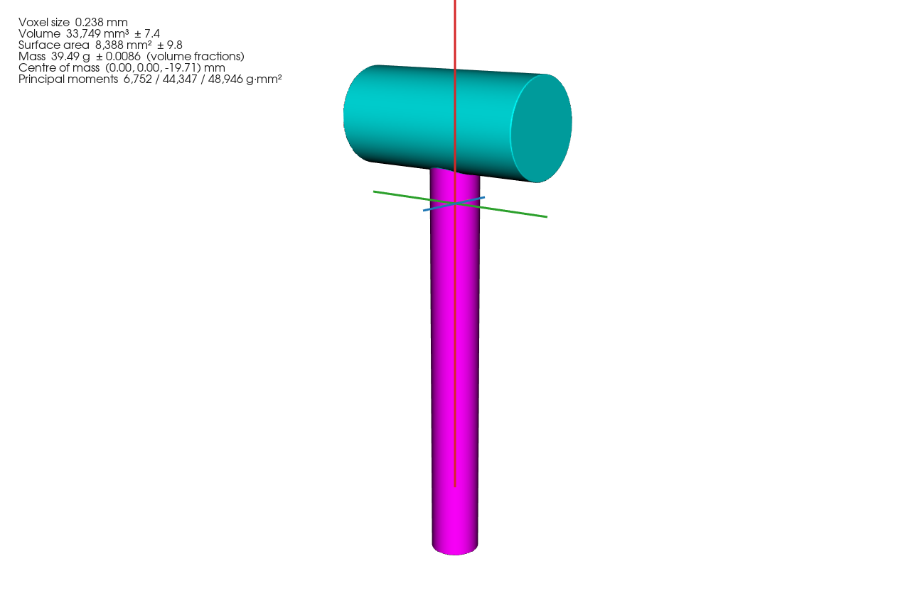
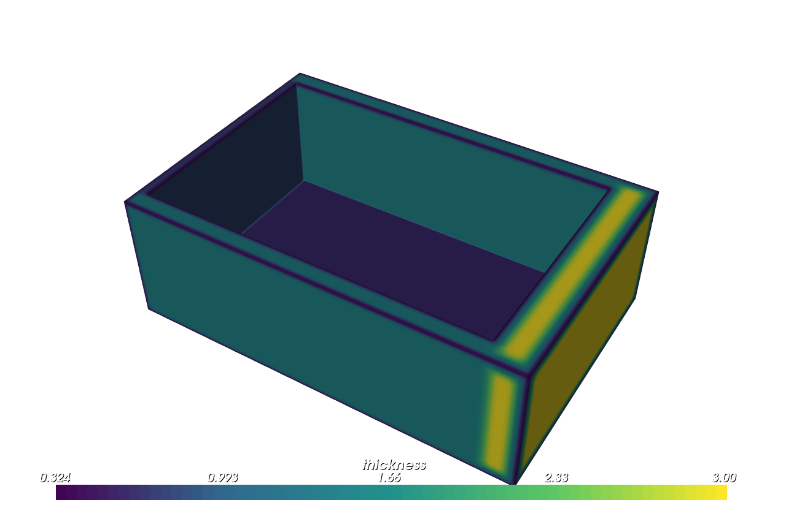
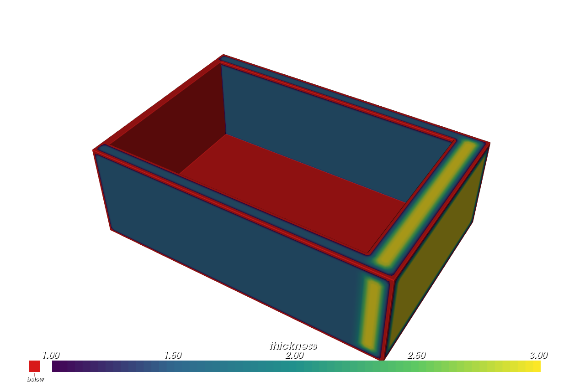
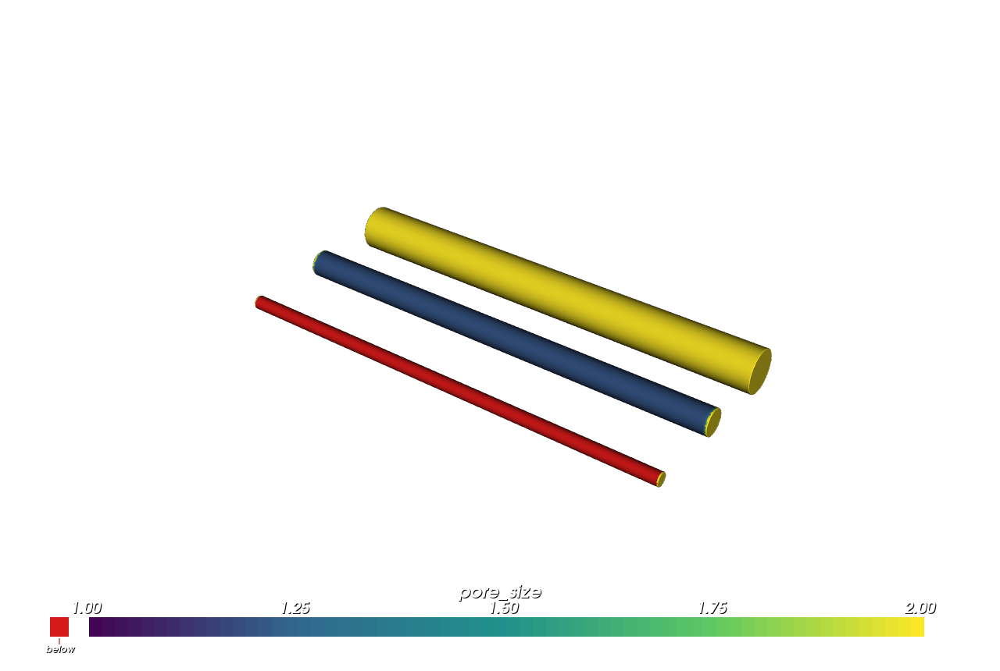
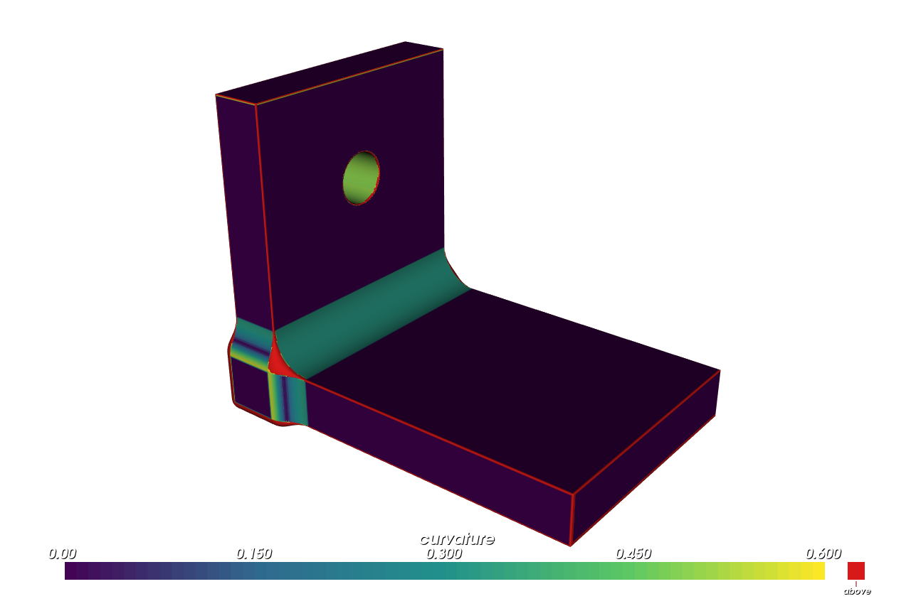
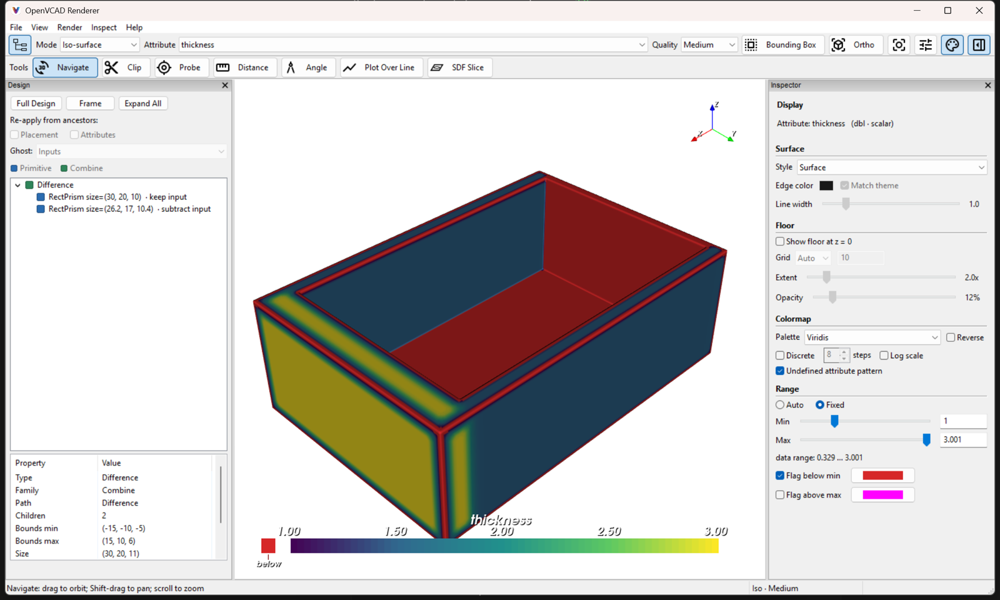
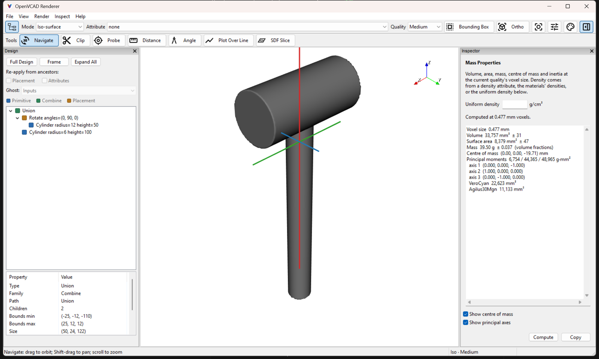

Analysing Designs#
Before you print a design, you usually want to know a few things about it. How heavy is it, and where is its balance point? Are any walls too thin to print, or any channels too narrow for resin or powder to drain? Where are the sharp edges that might need a fillet? This guide shows the OpenVCAD tools that answer these questions, and how to see each answer in the viewer.
Every analysis samples the design on a voxel grid, the same way the viewer does. Results that change from point to point, such as wall thickness or curvature, come back as attributes. That means you can colour the part by them, grade its material with them, or pass them to any tool that takes a field (see the Fields guide).
What You Will Learn#
In this guide you will learn how to:
Measure volume, surface area, mass, centre of mass and inertia, with material densities from your material configuration.
Map wall thickness at every point and find the walls that are too thin.
Measure pore and channel size in the empty space.
Find sharp edges and tight bends with a curvature field.
Show each result in the viewer and in rendered figures.
Prerequisites#
This guide assumes you have completed the Getting Started Guide, in particular Lessons 4–6 (attributes and volume fractions). The Fields guide explains how to shape a field once you have one.
Running the Examples#
The scripts are in examples/analysis/. Run any script directly:
cd examples/analysis
python 03_mass_properties.py
Each script prints what it measured and ends with viz.Render(...), which opens the interactive viewer. Close the window to end the script. (01 and 02 in that folder belong to the Support Analyzer guide.)
Lesson 1: Mass properties#
pv.mass_properties(part, voxel_size) measures a design’s volume, surface area and centroid. When it knows the density, it also gives the mass, centre of mass, inertia tensor and principal axes.
import pyvcad as pv
import pyvcad_rendering as viz
# The J750 configuration lists each material's published density in g/cm^3.
materials = pv.j750_materials
# A rigid head across the top of a rubber-like handle.
head = pv.Rotate(0.0, 90.0, 0.0, pv.Cylinder(pv.Vec3(0.0, 0.0, 0.0), 12.0, 50.0))
head.set_attribute(pv.DefaultAttributes.VOLUME_FRACTIONS,
pv.VolumeFractionsAttribute([(1.0, materials.id("VeroCyan"))]))
handle = pv.Cylinder(pv.Vec3(0.0, 0.0, -60.0), 6.0, 100.0)
handle.set_attribute(pv.DefaultAttributes.VOLUME_FRACTIONS,
pv.VolumeFractionsAttribute([(1.0, materials.id("Agilus30Mgn"))]))
mallet = pv.Union(head, handle)
# Mass comes from the volume fractions times each material's density. A design that is
# only geometry would pass density=... instead; a modelled "density" attribute wins.
report = pv.mass_properties(mallet, 0.5, materials=materials)
print(f"volume {report.volume:10.1f} mm^3 (+/- {report.volume_error:.1f})")
print(f"surface area {report.surface_area:10.1f} mm^2 (+/- {report.surface_area_error:.1f})")
print(f"mass {report.mass:10.2f} g from {report.mass_source.name}")
print(f"centre of mass {report.center_of_mass.round(2)} mm")
print(f"principal moments {report.principal_moments.round(1)} g mm^2")
for material, volume in report.material_volumes.items():
print(f" {materials.name(material):12s} {volume:10.1f} mm^3")
# In the viewer, Inspect > Mass Properties shows these numbers and draws the centre of mass.
viz.Render(mallet, materials)
volume 33756.8 mm^3 (+/- 30.2)
surface area 8382.5 mm^2 (+/- 43.7)
mass 39.50 g from volume_fractions
centre of mass [ 0. -0. -19.71] mm
principal moments [ 6753.5 44366.3 48965.9] g mm^2
VeroCyan 22626.4 mm^3
Agilus30Mgn 11130.4 mm^3
Render with mass_properties (volume_fractions)

The centre of mass sits about 20 mm below the head’s axis. The heavy head pulls it up from the middle of the handle. The red line is the principal axis with the smallest moment, the one the mallet spins about most easily. Each axis is drawn as long as the uniform ellipsoid with the same inertia, so its length shows how far the mass spreads along it.
Units. Lengths are in mm, densities in g/cm³ (the unit data sheets use), mass in grams and inertia in g·mm². report.center_of_mass and report.centroid are NumPy arrays, report.inertia_tensor and report.principal_axes are 3×3 arrays (the axes are its columns), and report.inertia_about(point) moves the tensor to another point.
Where the density comes from#
Mass needs a density at every point of the design. It comes from one of three sources:
Source |
How you give it |
|---|---|
A density attribute you modelled |
|
Volume fractions times each material’s density |
|
One uniform density for plain geometry |
|
With the default mass_source="automatic", OpenVCAD uses the first source the design offers, point by point in the order above. A point without a density attribute uses its volume fractions, then the uniform density. If a design offers more than one, you can pick one with mass_source="density_attribute", "volume_fractions" or "uniform". report.mass_source_volumes tells you how much volume each source covered.
OpenVCAD never guesses a density. If part of the design has none, or a material in its volume fractions has no density, the call raises an error that names the missing material or volume. A design with no density source at all still gets its volume, area and centroid, and report.mass is None.
Material configurations carry the densities. Each material in the JSON file can have an optional "density" key in g/cm³. The bundled j750.json lists the published cured densities of the J750 materials (Vero 1.18, VeroUltra 1.20, Agilus30 1.15, Tango 1.13, and so on). The colour-named materials in default.json use the Vero value, 1.18. Materials without a published cured density, such as the supports, VeroFlex and the medical materials, have none. Add or change one in a script with materials.set_density("SUP706", 1.1).
Averages and totals of any attribute#
The same integration gives the total and the average of any scalar attribute. Pass the names in attributes=[...]:
report = pv.mass_properties(part, 0.25, attributes=["modulus"])
modulus = report.attribute_integral("modulus")
print(modulus.mean, modulus.minimum, modulus.maximum, modulus.volume)
report.material_volumes gives the volume of each material, for example the total amount of a costly material.
Accuracy#
Voxels that the surface cuts through are weighted by the exact fraction of the voxel inside it, so the result is far more accurate than counting inside voxels:
On smooth surfaces the error shrinks with the square of the voxel size: a sphere 40 voxels across reads within about 0.1%.
Sharp edges are rounded off by about a voxel. A sharp-edged box 16 voxels thick reads within about 0.2% in volume and 3% in surface area. That error shrinks in step with the voxel size.
report.volume_error,surface_area_errorandmass_errorrepeat the calculation at twice the voxel size and report the difference. That is a cautious estimate, valid once every feature spans several voxels.Attributes are sampled once per voxel, so a boundary between two materials inside the part is placed to within half a voxel.
Lesson 2: Wall thickness#
pv.local_thickness(part, voxel_size) gives the local thickness at every point of the material: the diameter of the largest ball that fits inside the part and contains that point. In a plate it is the plate’s thickness, in a strut its diameter, and at a neck the neck’s width.
import pyvcad as pv
import pyvcad_rendering as viz
# An open tray: the left wall is 0.8 mm, the front and back walls 1.5 mm, the right wall
# 3 mm and the floor 0.6 mm.
outer = pv.RectPrism(pv.Vec3(0.0, 0.0, 0.0), pv.Vec3(30.0, 20.0, 10.0))
pocket = pv.RectPrism(pv.Vec3(-1.1, 0.0, 0.8), pv.Vec3(26.2, 17.0, 10.4))
tray = pv.Difference(outer, pocket)
# Thickness at every point is the diameter of the largest ball that fits there. Regions are
# the walls (not the sharp edges, which every ball misses) thinner than the threshold.
report = pv.local_thickness(tray, 0.1, threshold=1.0)
print(f"thinnest wall {report.minimum:.2f} mm at {report.minimum_location.round(1)}")
for region in report.regions:
print(f" {region.minimum:.2f} mm thin, {region.volume:6.1f} mm^3, "
f"from {region.minimum_corner.round(1)} to {region.maximum_corner.round(1)}")
# The result is an ordinary attribute: colour by it in the viewer, grade material, or feed it
# to geometry operators. In the viewer, pick the thickness attribute, then Display > Range >
# Fixed with Min 1.0 and Flag below min paints the walls thinner than 1 mm in a flag colour.
tray.set_attribute("thickness", report.attribute)
viz.Render(tray)
thinnest wall 0.60 mm at [11.9 8.4 -4.7]
0.60 mm thin, 404.3 mm^3, from [-15. -8.7 -5. ] to [12.3 8.8 5. ]
Render (thickness)

Render (thickness, range 1 to 3 mm, flag below)

Pick thickness in the viewer. Each wall reads its own thickness: 0.6 mm on the floor, 0.8 mm on the left wall, 1.5 mm at the front and back, and 3 mm on the right. The right figure uses a fixed colour range from 1 mm and paints everything below it red (see Lesson 5).
The report summarises the field:
report.minimumandreport.minimum_location: the thinnest wall and where it is.report.regions: withthreshold=, the connected regions thinner than the threshold, thinnest first. Each has its smallest thickness, location, volume and bounding box. The floor and the left wall meet, so they form one region here.report.histogram: bin edges and the volume in each bin.report.meanandreport.maximumare there too.report.attribute: the field itself, apv.FloatAttribute. Set it on the part you analysed.
Note: Every sharp convex edge reads thin in the field, because no large ball reaches into a sharp corner. You can see the thin bands along the tray’s rim. That is the honest local thickness, but it is not a thin wall. The thinnest wall and the regions count only places where opposite surfaces are close: walls, struts, necks and gaps, and knife edges sharper than about 60°.
Accuracy and cost. Thickness is rebuilt from the sampled surface, so it is correct for unions, lattices and TPMS designs too, whose inside values are not true distances. Walls, struts and gaps two or more voxels thick read to about a tenth of a voxel. Thinner ones are unreliable, so use a voxel of at most a quarter of the smallest thickness that matters. The working memory is about 17 bytes per voxel: a 300 × 200 × 100 grid needs about 100 MB. The max_memory_mb argument raises an error, before any memory is allocated, if a grid would need more. max_thickness= caps the measure (“at least this thick”), which keeps the work near the surface on chunky parts.
Lesson 3: Pore and channel size#
pv.pore_size(part, voxel_size) applies the same measure to the empty space inside the analysis box: the largest empty ball through each point. It finds openings too narrow for resin or powder to drain.
import pyvcad as pv
import pyvcad_rendering as viz
# A block with three drain channels along X: 0.6, 1.2 and 2.0 mm across.
block = pv.RectPrism(pv.Vec3(0.0, 0.0, 0.0), pv.Vec3(20.0, 12.0, 8.0))
channels = pv.Union(0.0, [
pv.Rotate(0.0, 90.0, 0.0, pv.Cylinder(pv.Vec3(0.0, y, 0.0), radius, 30.0))
for y, radius in ((-4.0, 0.3), (0.0, 0.6), (4.0, 1.0))
])
part = pv.Difference(block, channels)
# Pore size is the same measure as wall thickness, applied to the empty space inside the
# analysis box (here the part's bounding box): the largest empty ball through each point.
report = pv.pore_size(part, 0.05, threshold=1.0)
for region in report.regions:
print(f"opening {region.minimum:.2f} mm across near y = {region.location[1]:.1f} mm "
f"({region.volume:.1f} mm^3)")
# The field lives in the empty space, so view it on a node that fills that space: here the
# channels inside the block.
empty_space = pv.Intersection(block, channels)
empty_space.set_attribute("pore_size", report.attribute)
viz.Render(empty_space)
opening 0.60 mm across near y = -4.1 mm (5.5 mm^3)
Render (pore_size, range 1 to 2 mm, flag below)

Pick pore_size in the viewer. The pore-size field only has values in the empty space, so to see it you set it on a node that fills that space. Here that is the channels inside the block; in general pv.Difference(box, part) works. Pass bounds=(minimum, maximum) to search a different box. Pores within about one pore of the box’s edge read low, because balls are not searched outside the box.
Lesson 4: Curvature#
pv.FloatAttribute.curvature(part, kind) is a field of the surface’s curvature, in 1/mm:
"mean": positive on convex skin (1/R on a sphere of radius R), negative in hollows."gaussian": the product of the two principal curvatures. It is 0 on cylinders and negative on saddles."maximum": 1 / the tightest bend radius. Flat faces read 0, a 3 mm fillet reads 1/3, and a sharp edge reads about 1 / (half the voxel size). It shows where a fillet or extra thickness may be needed.
import pyvcad as pv
import pyvcad_rendering as viz
# An L-bracket: the inside corner has a 3 mm fillet, every other edge is sharp, and a 4 mm
# hole runs through the upright.
base = pv.RectPrism(pv.Vec3(0.0, 0.0, 2.0), pv.Vec3(30.0, 20.0, 4.0))
upright = pv.RectPrism(pv.Vec3(-13.0, 0.0, 12.0), pv.Vec3(4.0, 20.0, 24.0))
bracket = pv.Union([base, upright], blend_radius=3.0, profile=pv.BlendProfile.circular)
hole = pv.Rotate(0.0, 90.0, 0.0, pv.Cylinder(pv.Vec3(-13.0, 0.0, 16.0), 2.0, 10.0))
part = pv.Difference(bracket, hole)
# "maximum" is 1 / the tightest bend radius at each point, in 1/mm: 0 on flat faces, 1/3 on the
# 3 mm fillet, 1/2 around the hole, and about 1 / step (here 10) on sharp edges, where a fillet
# may be needed.
bend = pv.FloatAttribute.curvature(part, "maximum", voxel_size=0.2, bandwidth=2.0)
part.set_attribute("curvature", bend)
viz.Render(part)
Render (curvature, range 0 to 0.6, flag above)

Pick curvature in the viewer. Flat faces are dark, the fillet reads 1/3 and the hole 1/2. With a colour range of 0 to 0.6 and an above-range flag, every sharp edge stands out in red. Use a voxel size of about a quarter of the smallest radius that matters, because features smaller than half the voxel size are smoothed over. Curvature is computed point by point from the design, so unlike thickness it needs no grid of its own.
Lesson 5: Seeing results in the viewer#
The analysis fields are ordinary attributes, so the viewer colours by them like any other: pick the attribute from the Attribute list. Two viewer tools help with analysis results.
Flag colours. Open Display (the sliders button on the toolbar) and go to Range. Choose Fixed and set Min and Max. Then tick Flag below min or Flag above max and pick a colour. Values outside the range are painted in that colour, and the scale bar shows a matching swatch. To see walls thinner than 1 mm, set Min to 1 and flag below it. Choose a palette that doesn’t contain your flag colour; viridis works well with red.
Viewer: Display > Range with Flag below min

Mass Properties. Inspect > Mass Properties runs Lesson 1’s calculation on the design you are viewing, at the current quality. It uses the materials you passed to viz.Render(part, materials), and an optional Uniform density for plain geometry. It lists the numbers (Copy puts them on the clipboard) and draws the centre of mass and the principal axes over the part. You can turn the markers off with the two checkboxes. Press Compute again after you change the quality.
Viewer: Inspect > Mass Properties

In rendered figures. viz.Render_Image takes the same options as settings: below_range_color and above_range_color (with scalar_range_mode="fixed" and the range), and mass_properties=True (or a report) to draw the centre of mass, axes and a caption.
Using the results#
Because the results are attributes, they work anywhere a field does:
Grade material by thickness or curvature: for example
pv.VolumeFractionsAttribute([(t.normalize(0.5, 3.0), stiff), (1.0 - t.normalize(0.5, 3.0), soft)])witht = report.attribute. Lesson 1 of the Fields guide shows how to shape a field first.Check a design in a loop: the reports are plain Python objects, so a script can compute the thinnest wall or the mass and change a parameter until it passes.
Inspect values: the viewer’s Probe, Plot Over Line and Attribute Statistics tools read analysis attributes like any other.
Fix what you find: thicken thin walls with
pv.Offsetorpv.Shell, or round tight edges with a blend, from Offsets, Blends and Arrays.
Every function and report class is listed on the Python API page for analysis.
The thickness and pore-size fields hold values in, and just outside, the space they measured. Sample them in that space, not elsewhere.